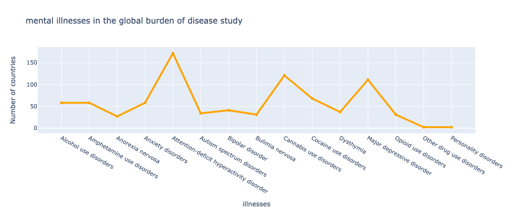

Here is an image:
These charts report experience of depression or bipolar disorder over an adult lifetime. To preface, the datasource reports it’s estimated that 1 in 3 women experience major depression in their lives. This does not chart diagnosis of these disorders: The Bipolar side of the chart reports that nearly 89% up to 100% of adults in Australasia and the Caribbean have experienced bipolar symptoms/episodes. Most other regions report much lower rates at less than 50% having experienced bipolar. The Major Depression side of the chart shows a different picture. 100% of adults in Australasia and the Caribbean reported experiencing Major Depression at some point. On this chart, across every area surveyed, Depression had a higher percent experience. This is not by a small margin either, there is a major disparity between the two. This means that experiences of depression, like seen in the previous chart, is something a large percentage of adults will experience at some point in their lifetime.